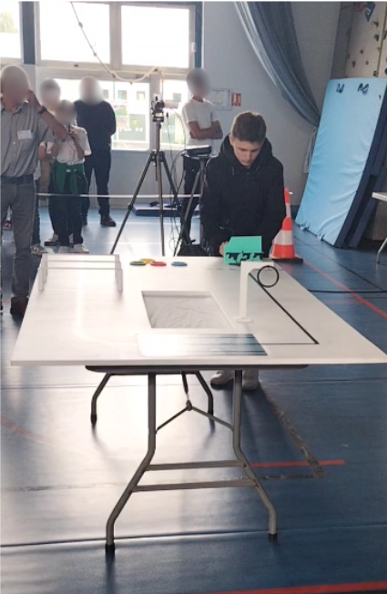
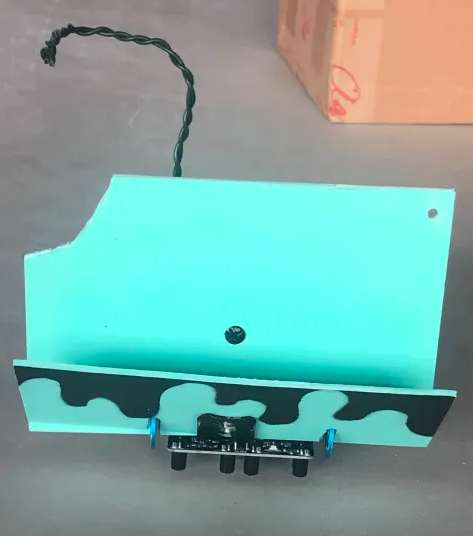
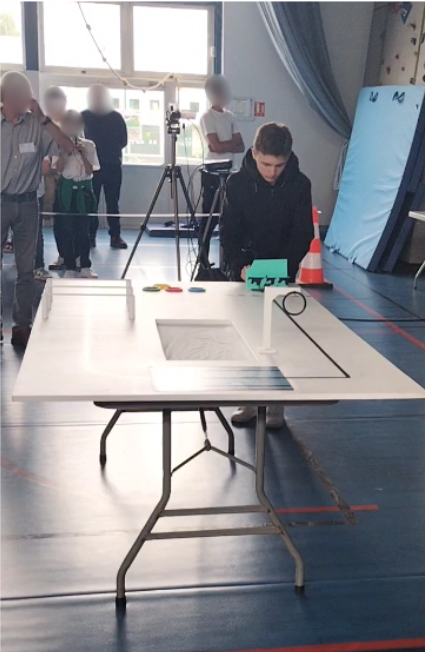
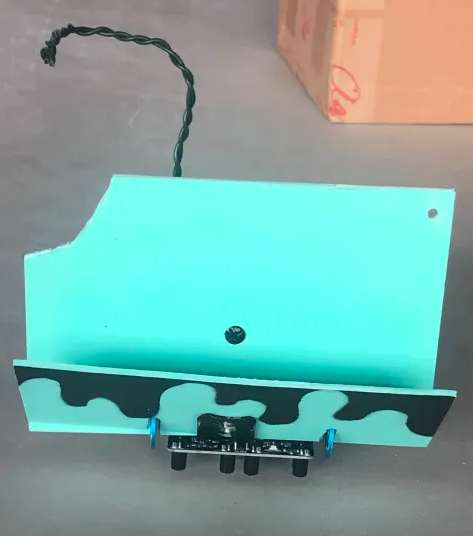

Mon Parcours.
Stage Entreprise / 2025
Mentalworks
Lors de mon stage de 3ème, j'ai pu observer de près le quotidien d'une équipe de production digitale.
- Observation des développeurs et graphistes.
- Missions de vérification et bureautique.
- Apprentissage du travail en équipe.
Concours Académique / 2023-24
Défi Robot
Regarder quelques photos de la finale et de la préparation.
Au départ, nous étions un groupe assez nombreux à participer au Défi Robot Académique Collège. L’objectif était de créer un robot capable de suivre un parcours précis et de réaliser différentes missions, tout en appliquant nos connaissances en technologie, codage, logique et travail d’équipe.
Avec le temps, certains membres ont commencé à douter de nos compétences et ont décidé de se retirer. Finalement, il ne restait plus que trois d’entre nous, mais nous étions déterminés à aller jusqu’au bout.
Notre organisation :
- Planification : Identification des tâches, répartition des rôles et suivi dans un fichier Excel.
- Programmation et montage : Codage des mouvements, tests des capteurs, ajustement des moteurs.
- Dossier numérique : Présentation de la démarche et analyse des solutions techniques.
- Soutenance orale : Répétition du discours et préparation des réponses (dont une partie en anglais).
Nous avons également dû faire face à des délais de livraison particulièrement longs pour recevoir une partie essentielle du matériel, ce qui a considérablement freiné l’avancement du projet et nécessité une réorganisation complète de notre planning.
La soutenance orale, appelée Préao, était un moment clé. Nous disposions de dix minutes pour présenter notre projet. Une partie de la présentation devait être faite en anglais, ce qui nous a permis de valoriser certains aspects du projet devant le jury.
Malgré la pression, nous avons réussi à présenter notre projet de manière claire et structurée. Notre persévérance a payé : nous avons été qualifiés pour la finale départementale !
Cette aventure m’a appris l’importance de la persévérance, de la confiance en soi et de l’organisation logique dans un projet technique.
 


